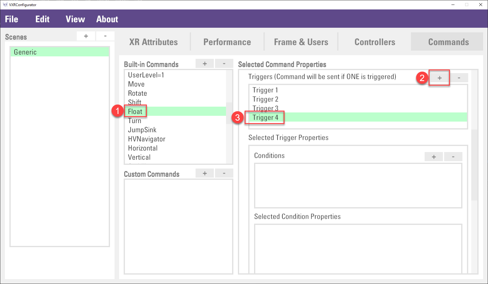
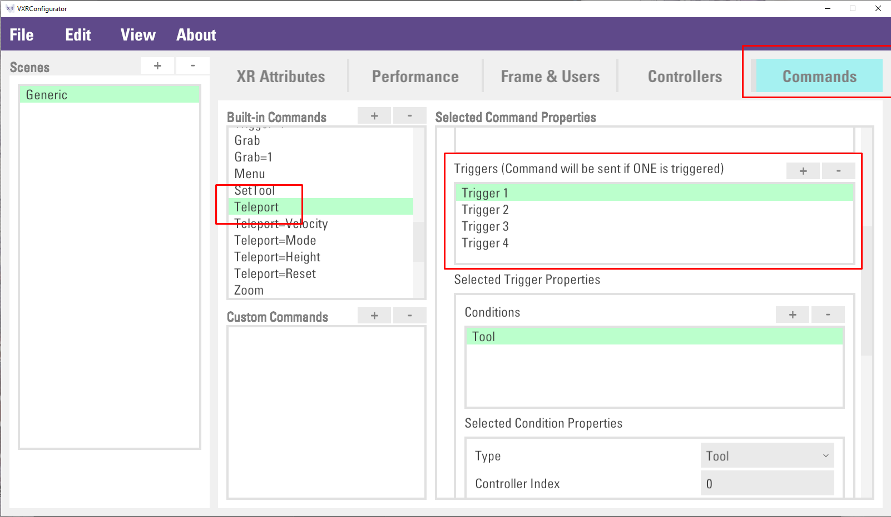
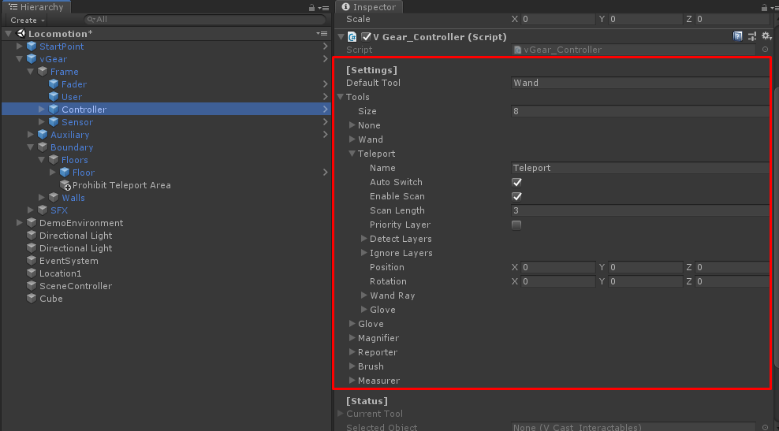

Locomotion
VotanicXR provides a set of built-in locomotion tools to help the user navigate in the virtual world. These tried-and-tested Locomotion tools offer options for the user to safely move around in the virtual world and avoid motion sickness, as the human body does not like it when there’s a mismatch between what it sees and what it feels.
This chapter introduces two locomotion tools in VotanicXR to move the user, one is teleportation, the other one is movement.
Movement is the locomotion that the user moves gradually by initiating artificial acceleration using key input. It is similar to how a player move in a typical first-person view video game. We suggest using these methods with caution as it is easy to trigger motion sickness when used inappropriately.
Teleportation is the locomotion that the user is transitioned to a target location via a rapid animation tuned to maintain player comfort. This is the most common way to move the user in VR with minimal discomfort.
For the detailed techniques of VR locomotion, you can learn the best practices and suggestions from this link.
Interaction Tutorial Scene
The related materials and example scene are in Assets > Votanic > VotanicXR_Tutorial > Tutorial03_Locomotion.
Movement
Movement Basic
VotanicXR SDK Manager provides six built-in commands for movement, namely Move, Rotate, Shift, Float, Turn and JumpSink. The effect of each command is listed in the below table.
Effect of each command
| Command | Description | Effect |
|---|---|---|
| Move | Move the user forward and backward at a constant velocity along a straight line | |
| Rotate | Rotate the user left or right at a constant angular velocity | |
| Shift | Move the user left or right at a constant velocity along a straight line | |
| Float | Change the elevation of the user at a constant velocity along a straight line |  |
| Turn | Snap turn the user’s front direction by 90 degrees left or right | |
| JumpSink | Make the user jump for a fixed height or sink the user to the ground layer below the user’s current position. |
Configure Movement Settings
It is possible to customize parameters of the movement commands in the vGear_User component of the vGear > Frame > User GameObject. The figure below shows the User GameObject’s settings in Unity’s Inspector. Expand the Navigator attribute, there are several movement parameters related to movement speed, angular velocity, jumping height, etc. available for adjustment to suit the needs of your VotanicXR application.
Commands and Devices Mapping
The six movement commands are pre-configured to different key inputs on various input devices to accommodate cross-platform compatibility. The default command input mappings are shown in the table below for your reference. Optionally, you can always customise the mappings for each application using the VotanicXR Configurator.
| Command | Keyboard / Mouse in PC Mode | Vive Controller | Other Supported Input Devices |
|---|---|---|---|
| Move | W / S | Touchpad Vertical Axis | Axis[1] of the 1st and 2nd controller recognized by VotanicXR |
| Rotate | Mouse move left / right | Touchpad Horizontal Axis | Axis[0] of the 1st and 2nd controller recognized by VotanicXR |
| Shift | A / D | No mapping by default |
Axis[3] of the 1st and 2nd controller recognized by VotanicXR |
| Float | Mouse wheel scroll up / down | No mapping by default |
Axis[4] of the 1st and 2nd controller recognized by VotanicXR |
| Turn | Holding alpha3 + Keypad4 / Keypad6 | No mapping by default |
Button[10] / [11] of a connected controller recognized by VotanicXR |
| JumpSink | Holding alpha3 + Keypad2 / Keypad8 | No mapping by default |
Button[13] / [12] of a connected controller recognized by VotanicXR |
Getting Movement Command Input Value
Programmatically, we can always use VotanicXR’s cross-platform input system to initiate movement calls via the vGear.Cmd API. By calling the movement commands in your script, you can flexibly adapt the movement commands to any interactions in your VotanicXR application, not just limited to key inputs from connected input devices.
It is also possible to retrieve the value of a command by using the vGear.Cmd.Value("CommandName") API call. The call will get the value of the command call and could be useful when you are debugging your VotanicXR application. Below shows an example to retrieve the value of the Move command in Unity Update.
void Update()
{
Debug.Log("Move : " + vGear.Cmd.Value("Move"));
}
| Command | Value | Remark |
|---|---|---|
| Move | -1 to +1 | positive = forward negative = backward |
| Rotate | -1 to +1 | positive = turn right negative = turn left |
| Shift | -1 to +1 | positive = shift right negative = shift left |
| Float | -1 to +1 | positive = elevate user negative = lower user |
| Turn | -1 or +1 | positive = turn right by 90 degrees negative = turn left by 90 degrees |
| JumpSink | -1 or +1 | positive = jump up negative = sink to the ground below |
Configure Binding of Movement Command and Button
The mapping of locomotion command and button is stored in setting.vxrs, and can be configured by using the VotanicXR Configurator. Below we showcase an example on how the default movement command input binding can be customized.
Open tutorial scene. In
Projectwindows, go toAssets > Votanic > VotanicXR_Tutorial > Tutorial03_Locomotion > Resources, open sceneLocomotion.Select the vGear GameObject, the setting.vxrs file location is defined in
Setting Pathfield.In Unity’s Project window, follow the
setting.vxrspath defined in vGear GameObject’sSetting Path, double click theSetting_Locomotion.vxrsfile to open and edit it with VotanicXR Configurator.Select the
Commandstab, the built-in commands are listed inBuild-in CommandswindowSelect
Floatcommand in the Built-In Commands list. Click+button in the Selected Command Properties Windows. Then, select the created new Trigger (in this case, Trigger4)
Scroll down to Selected Input Properties section. Select
KeyboardPressin theTypeand then put downrin KeyClick
File > Saveto save the changes.Go back to the Unity Editor and play the scene. The user will be floating up when user press the
rkey.
Movement Modes
Traveler and Soul are two modes to change the user transform and movement behaviour in the VR world. They are independent modes that can be mixed-and-matched to fit different design choices in the VotanicXR application.
Traveler Mode is a Boolean value that toggles the availability of the movement commands for using in navigation. When Traveler Mode is disabled, user cannot navigate in the VR world through the default movement commands, but user is still able to move around by using other methods such as teleportation. Apart from the default movement commands, any custom commands with Traveler set as Pre Conditions in the command properties will also be restricted by the Traveler Mode value.
Soul Mode is a Boolean value to toggle the user transform behaviour regarding gravity and collision. When Soul Mode is enabled, the user transform will ignore gravity and collision with colliders. Similar to the Traveler Mode, any custom commands with Soul set as Pre Conditions in the command properties will also be restricted by the Soul Mode value.
Movement modes can be changed in Unity Inspector or via API.
In Inspector
Select vGear GameObject in Hierarchy window. Navigate to [Status] section, check or uncheck the Traveler and Soul attribute to enable/disable the movement modes.
In API
Use the vGear.SetTraveler(bool) and vGear.SetSoul(bool) function to enable/disable the movement modes.
void Start()
{
vGear.SetSoul(true);
vGear.SetTraveler(true);
}
Teleportation
Teleportation is a popular navigation tool in VR application. It allows users to move around a scene without having to deal with vection-inducing acceleration. Users can point and indicate the destination where they want to move and be teleported to the destination when they initiate the teleportation command.
Teleport Basic
In VotanicXR SDK Manger, tool Auto-switch is enabled by default, meaning the tool will automatically switch between the Wand tool and the Teleport tool based on the direction which the user wand is pointing. If the user wand is pointing upward, the tool will change to the wand tool; and if the user wand is pointing downward, the tool will change to the teleport tool.
| Wand Tool | Teleport Tool |
|---|---|
Initiating Teleport
In VotanicXR, the teleportation action can be initiated by either pressing the input device button that is bind to the Teleport command, or invoking teleportation programmatically.
Invoke Teleport by Input Device
The Teleport command can be bind to an input device button from the Commands tab in VotanicXR Configurator.
In
Projectwindow, go toAssets > Votanic > VotanicXR_Tutorial > Tutorial03_Locomotion > Resourcesand double click theSetting_Locomotion.vxrs.In Commands tab, select
Teleportcommand inBuilt-in Commandslist. Then, scroll down to the Triggers section to modify the existing key binding triggers or add a new Trigger for other devices.
After making the changes, save the setting file by clicking
File > Save. Play the scene and you can use the new key binding you have just configured.
Invoke Teleportation Programmatically
Alternatively, we perform teleportation programmatically using the VotanicXR API. It is done by using either the Teleport API to perform simple teleportation or the Transform API to teleport to a pre-defined location in the scene.
Invoke Teleport API for Simple Teleportation
Create a new C# script, and attach it to an empty GameObject.
In the C# script, input the following code in Update function, and then save the script.
void Update() { if (vGear.Cmd.Received("Grab")) { vGear.Cmd.Send("Teleport"); } }In the editor play mode, when trigger
Grabbutton in the controller, the user will teleport to the pointing destination.
Invoke Transform API to Teleport to a Given Position
Developer can setup fixed locations in the unity scene and trigger the teleportation to a specific location using the Transform API.
In the tutorial scene, create an empty GameObject and name it as
Location1, and place the GameObject into the scene.Create a GameObject
SceneControllerand then create and attach aTeleportationscript toSceneController.Input the follow code in the
Teleportationscript.void Update() { if (vGear.Cmd.Received("Trigger")) { vGear.user.Transform(GameObject.Find("Location1").transfrom); } }In the play mode, user transform will teleport to the designated location when triggering the controller
Triggerbutton.
Using Teleport Area
Default Teleport Area
By default, VotanicXR’s Teleport tool performs teleportation only to pre-defined Teleport Area. The teleport area is defined by the Floor GameObject, which can be located at vGear > Boundary > Floors > Floor. The size and position of the GameObject Floor can be adjusted according to the teleportation needs in the scene.
Adding Addition Teleport Area
Apart from the default teleport area, you can create and define additional teleport areas by following the steps below:
Create a cube by
GameObject > 3D Object > Cube, and place it in the scene.Make sure the GameObject it has the Collider component enabled. Otherwise, add a collider component to the GameObject.
For the GameObject
cube, set the Layer to30:vLayerFloor.Play the scene and point the user wand to the newly created GameObject
Cube, the teleport tool circle is blue when it is on the GameObjectcube, meaning the user can be teleported onto the surface of the cube.
Adding Prohibit Teleport Area
A specific area can be set as prohibit area for teleport. The prohibit area can be placed on top of the teleport area to block out areas where the user cannot teleport onto.
Create an empty GameObject in
vGear > Boundary > Floorsand renameProhibit Teleport Area.Add a box collider component into GameObject
Prohibit Teleport Area, and adjust it into the same height with the floor collider.Create a new layer, for example
vLayerProhibitTeleport.Mark down the index of the newly added layer. In this case, the layer’s index is 10.
Apply the layer to the GameObject.
In the Hierarchy, select the
vGear > Frame > ControllerGameObject, and then go to the[Setting] > Tools > Teleportsection in the Inspector windows.
Check the option
Priority Layer, and add the new Layer index to theDetect LayersandIgnore Layerswith priority. WhenPriority Layeris checked, VotanicXR will scan the layers using the sequence as stated in the Detect Layers and Ignore Layers list. The higher up the layer index in the list, the higher the priority of the layer.Save the setting and play the scene, the teleport tool circle will turn red when it is on the prohibit teleport area, meaning no teleportation can be performed in the area.
Adding Waypoints to Teleport
Configuration waypoint for teleport
Waypoint can be used to restrict positions where the user can teleport to. By using waypoints, we can make sure the user will teleport to the desired position.
Create a waypoint by right-click in the Hierarchy Window and select
vGear > GameObjects > Waypoint.Drag the Waypoint prefab to a desired position in the scene.
In
vGear_Teleport advancedsettings, change the Teleport Waypoint mode invGear > Frame > Controller > Teleportbased on the teleportation needs in the scene.
There are three modes for Teleport Waypoint. The detail is listed in below table.
| Mode | Detail | Effects |
|---|---|---|
| Snap | default mode, user can teleport to both waypoint and teleport area (GameObject with collider and layer is set to vLayerFloor). The teleport tool will snap to Waypoint GameObject if it is close to the Waypoint. | |
| Waypoint Only | User can teleport to waypoint only | |
| Ignore | User can teleport to everywhere, but Teleport tool will not snap to the Waypoint |
Other Waypoints properties
Waypoints can be customized with different settings, including face angle and offset, to force the user to land at desired angle and position when teleporting to the waypoint.
Select the
WaypointGameObject. CheckApply Rotationand input theFace AngleandOffset.The rotation and offset will be applied when teleport to that waypoint

Advanced Teleport
Collision Mode
By default, user can only teleport to the location with collider in the vLayerFloor layer, this is defined as the Collision Mode in Advanced Teleport Setting. However, in some use cases, such as point cloud visualization, 360 videos, there are no GameObject in the scene to add the collider, and therefore cannot use the default teleport mode to navigate in the VR world.
In these situations, the Collision mode in teleport tool can be disabled to allow teleporting without needing the colliders. When the Collision mode is turned off, user can by default teleport to positions on the same level as the user. Optionally, the vGear.controller.teleport.SetHeightOffset API can be used for adjusting the height of teleportation in this mode.
For example, the below script will set the teleport height at 0.2m on script object is initialized.
void Start(){
vGear.controller.teleport.SetHeightOffset(0.2f);
}
Enable / disable Collision
- In
Hierarchywindow, selectvGear > Frame > Controller > TeleportGameObject. - Change the checkbox in the
Collision Modeproperty
| Collision Mode enable | Collision Mode disable |
|---|---|
 |
Teleport’s Transition Effect
There are two transition effects available in VotanicXR for use in teleportation: Translation and Fade. The effects are shown in the below table.
| Translation | Fade |
|---|---|
 |
 |
To change the transition effect,
In
Hierarchywindow, select GameObjectvGear > Frame > User.Change the
[Setting] > Transition > Methodin theV Gear_Userscript.Optionally, details of the transition effects can also be fine-tuned to suit the needs of the application and to reduce motion-sickness.